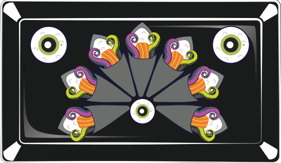
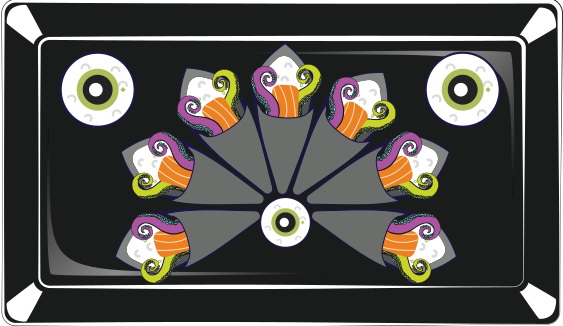

OWNER CHEF
Mashatoshi "Gooey" Sugio
BIOGRAPHY
Gooey became a Sushi Chef in Japan at the age of 19 because he was very drawn to the artistic and culinary world of sushi. For several years he worked as a Sushi Chef in Tokyo.
June 1978
Gari initially came to the United States to help a friend with the opening of a new Japanese restaurant in New York City. Subsequently, he worked as a Sushi Chef for several Japanese restaurants in NYC.
During this period, while working, Gari observed many of restaurant clientele eating sushi in undesirable manner. He found that customers used too much soy sauce. In fact, they dipped whole pieces of sushi in the soy sauce, which caused them to taste nothing but the sauce instead of the delicate succulent sushi pieces. Gari wanted diners to enjoy the fresh taste of the fish as well as the delicate sushi rice instead of the soy sauce, so he tried exexplaining to his customers the better way to eat sushi.
November 1993
He decided to create his own brand of sauce to put directly on the sushi during the preparation stage. This meant that customers were saved the trouble of gauging the amount of sauce needed for each piece of sushi. In addition they would truly enjoy the taste of each sushi piece, which was prepared with the perfect amount of sauce, thereby experiencing the true taste of sushi. Having eaten at various restaurants in New York, Gari determined that he could create a variety of sauces that would go well with sushi in a similar pattern to world’s other cuisines such as French and Italian.
January 1997
Gari decided to finally open his own restaurant, “Sushi of Gari,” on the Upper Eastside of Manhattan. His main focus continues to be his desire to serve his sushi with the original sauce and toppings he has created. These sauces only serve to enhance the sensitive taste and flavor of each morsel of fish.
July 2001
His second restaurant opened in Aoyama, Tokyo, Japan.
March 2007
“Gari,” his third restaurant, opened on the Upper Westside of Manhattan.